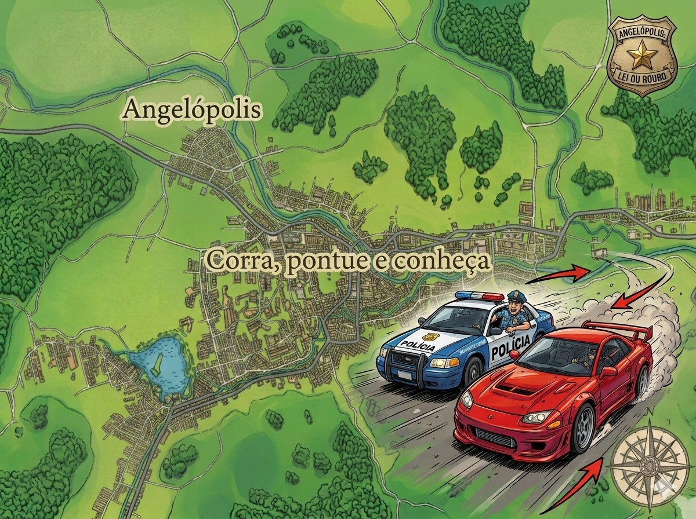

Pontos turísticos
Queda d'água de 38 metros cercada por mata atlântica preservada, com trilha leve de 900 m e piscina natural na base.
Construída em 1924, reúne acervo de arte sacra colonial e mirante na torre com vista para todo o Centro Histórico.
Ponto mais alto do município, com vista panorâmica de 360° — famoso pelo nascer do sol e voos de parapente.
Roteiro por três fazendas centenárias com museu do café, degustação e trilhas entre os cafezais em terraço.
52 hectares de mata preservada, com trilhas sinalizadas, área de piquenique e observação de aves nativas.
Tradicional feira aos sábados na Praça do Rosário, com cerâmica, tecelagem e doces artesanais da região.
Descubra a cidade
Em vez de só ler sobre a cidade, você vai correr por ela. Um jogo de perseguição policial acelerado pelas ruas reais de Angelópolis — cada curva, praça e bairro do mapa turístico vira parte da fuga. Quem escapa?

Roteiro sugerido
Um roteiro guiado pela Secretaria de Turismo para quem tem um fim de semana e quer sentir o melhor da cidade.
Solicitar guia localIgreja Matriz, Casario do Rosário e Museu Municipal — encerrando na Feira de Artesanato (se for sábado).
Visita guiada a uma fazenda centenária, com degustação e pôr do sol entre os terraços de café.
Trilha leve até a queda d'água — leve roupa de banho e chegue cedo para evitar o movimento.
Encerre o roteiro com a vista panorâmica da Serra Azul, ideal para o pôr do sol.
Agenda turística
Caminhada coletiva com guias credenciados pelas trilhas da Serra Azul.
Três dias de música, gastronomia local e visitas guiadas às quedas d'água do município.
Produtores locais apresentam cafés especiais premiados em concursos regionais.
Iluminação especial do Centro Histórico e presépio vivo na Praça do Rosário.